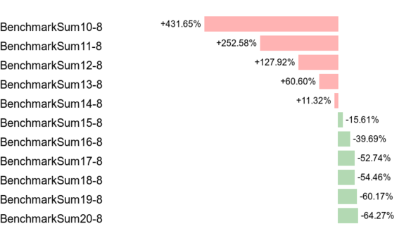

Things I Like about Go Language
A brief comparison of Go features with those of C++ and Java
Table of Contents
I recently had a chance to design and develop a library in Go language, also known as Golang, which has been used by some Kubernetes-based services in Huawei’s cloud platform. Having developed several C++ and Java libraries in the past, I have come to admire the simplistic design of Go.
In this blog post, I will share my personal thoughts on the pragmatic approach of Go that I found particularly interesting. For example, Go deliberately forbids inheritance and only allows composition, while Java allows single inheritance and C++ permits multiple. Note that best practices advise using composition over inheritance. It is debatable whether forbidding inheritance is a good thing or not, but composition definitely yields a simpler, highly decoupled, and easily maintainable code than does inheritance.
History of Go
Go is a modern programming language created at Google by Robert Griesemer, Rob Pike, and Ken Thompson and announced in November 2009. Primary motivation of the authors behind the design of Go was to avoid many design flaws and complexities in C++ while keeping advantages of C and adding advanced features, such as garbage collection, goroutines and channels, and support for object-oriented and functional programming. As Rob Pike once said: “Complexity is multiplicative.” Thus, the authors deliberately omitted some features common in similar languages and conservatively included their positive characteristics. The result is a simple yet powerful compiled language (like C/C++) with modern features like package management, garbage collection, and exceptional concurrency support.
Go is influenced by several languages. Its expression syntax and use of pointers and references remind us of C language. However, thanks to its garbage collector, one needs not worry about manual memory managements and nasty memory leaks. Variable declarations and function definitions resemble those of the Pascal language. The concepts of package management and imports are also from languages Modula-2, Oberon, Oberon-2, and Object Oberon, which are developed from Pascal. These languages are well known for their high compilation speed, mostly due to their unique way of dependency management. Powerful concurrency support of Go is built upon the concept of communicating sequential processes (CSP), introduced by Tony Hoare in 1978. The concept of CSP was previously implemented in languages like Squeak, Newsqueak and Alef.
Concurrency
It is not always true that any code will run faster on machines with more cores. It is true, though, only if the code is designed with concurrency in mind. A code with four concurrent threads will often run faster when moved from a single-core machine to a quad-core machine. Thus, concurrent programming is of great importance in high performance computing (HPC). You may have also heard that parallelism is very important in HPC. But, are concurrency and parallelism the same?
Concurrency vs. Parallelism
Concurrency and parallelism are terminologies used in multi-threaded systems and refer to two different mechanisms. All the following four cases are possible:
- Neither concurrent nor parallel system
- Concurrent but not parallel system
- Parallel but not concurrent system
- Both concurrent and parallel system
To illustrate what concurrency and parallelism mean, let us consider an example of cars and roads. Imagine cars moving on a road with single lane. Any car can only move when the car in front of it moves forward; otherwise, it’s blocked. This is an example of neither concurrent nor parallel system.
Now, suppose that cars from different directions approach an intersection with a stop sign. Only one car at a time can go through the intersection. Thus, cars move concurrently one at a time. This is an example of concurrent but not parallel system.
Next, imagine a highway with multiple lanes in which cars move in their own lanes without interfering with those in the other lanes. This is an example of a parallel but not concurrent system.
Finally, imagine the same highway in which cars are trying to merge the highway. The merging cars and those in the far right move concurrently, while those in other lanes move in parallel. This case is an example of both parallel and concurrent system.
Concurrency in Go
Concurrent programming in Go is modeled as communicating sequential processes (CSP) by means of goroutines and channels. Goroutines are lightweight threads and channels are instruments to send and receive messages among them. Goroutines and channels are signature features of Go and have contributed to its popularity due to their ease of use and efficient implementation. For more details about goroutines and channels, one may consult The Go Programming Language, by Alan A.A. Donovan and Brian W. Kernighan.
A goroutine is a function called with the keyword go, which runs in a different thread from the main one. In the following code, counter runs in the main thread, while spinner runs in a separate thread.
func main() { go spinner(100 * time.Millisecond) counter(10, 500 * time.Millisecond) } func spinner(delay time.Duration) { for { for _, r := range `-\|/` { fmt.Printf("\r%c", r) time.Sleep(delay) } } } func counter(n int, delay time.Duration) { for i := 1; i <= n; i++ { fmt.Printf("\r\t%d", i) time.Sleep(delay) } }
Goroutines communicate through channels. Channels are first-class object types in Go that can be declared, initialized, and passed to functions similar to any other variables. They may be bidirectional, both sender and receiver, or unidirectional, either sender or receiver. Let us illustrate using channels with an example.
Example
Suppose that we want to compute \(\sum_{i=1}^nf(x_i)\), where computation of \(f(x_i)\) values are expensive, but can be done in parallel. We will see in a moment how easy it is to design a concurrent code for this problem.
Such a problem is called embarrassingly parallel, since computation of function values for different inputs can be assumed independent. We design \(n\) goroutines each responsible for computing one function value and sending it to a channel. Then the main goroutine receives from the channel and adds them up to compute the total summation.
func SumSerial(x []int, f func(int) int) int { sum := 0 for _, xi := range x { sum += f(xi) } return sum } func SumConcurrent(x []int, f func(int) int) int { entries := make(chan int) for _, xi := range x { go func(val int) { entries <-f(val) }(xi) } sum := 0 for range x { sum += <-entries } return sum }
In function SumConcurrent, we create \(n\) goroutines, each responsible for computing one function value and sending the result to entries channel. The main goroutine receives from the channel and adds up the values.
Note that xi is not used directly in the goroutines inside the loop. Instead, we pass it as an argument to the goroutines. The reason is that we do not want a variable to be shared among all goroutines.
Importance of Concurrency
Concurrency comes with a cost, even though goroutines are lightweight and efficient. We use Go’s benchmark tool to compare performance of SumSerial and SumConcurrent functions.
Assume that \(x\) is a slice of \(10\) elements, all equal to \(k\), which takes values of \(10,11,...,20\). We use the Fibonacci function, computed recursively, whose computation time grows exponentially in the input value. The computation time of SumSerial grows exponentially too, as \(k\) increases. However, the exponential growth of the computation in the concurrent version SumConcurrent is harnessed due to parallelism. In fact, in a multi-core machine, the computation of some function values for different inputs are performed in parallel. As we can see in the following graph, the concurrent version beats the serial version for all \(k > 14\).
$ # benchmark SumSerial function $ go test -bench=. > serial $ cat serial goos: darwin goarch: amd64 pkg: sum BenchmarkSum10-8 500000 3602 ns/op BenchmarkSum11-8 300000 5726 ns/op BenchmarkSum12-8 200000 9442 ns/op BenchmarkSum13-8 100000 14920 ns/op BenchmarkSum14-8 100000 24445 ns/op BenchmarkSum15-8 50000 39431 ns/op BenchmarkSum16-8 20000 64182 ns/op BenchmarkSum17-8 10000 105370 ns/op BenchmarkSum18-8 10000 165543 ns/op BenchmarkSum19-8 5000 271894 ns/op BenchmarkSum20-8 3000 432539 ns/op PASS ok sum 19.672s $ # benchmarking SumConcurrent function $ go test -bench=. > concurrent $ cat concurrent goos: darwin goarch: amd64 pkg: sum BenchmarkSum10-8 100000 19150 ns/op BenchmarkSum11-8 100000 20189 ns/op BenchmarkSum12-8 100000 21520 ns/op BenchmarkSum13-8 100000 23961 ns/op BenchmarkSum14-8 50000 27211 ns/op BenchmarkSum15-8 50000 33277 ns/op BenchmarkSum16-8 50000 38710 ns/op BenchmarkSum17-8 30000 49793 ns/op BenchmarkSum18-8 20000 75396 ns/op BenchmarkSum19-8 20000 108284 ns/op BenchmarkSum20-8 10000 154527 ns/op PASS ok sum 24.236s # Visualization of benchmark comparison (serial vs concurrent) $ benchcmp serial concurrent | benchviz > bench.svg

Loose Coupling by Design
Go supports object-oriented programming in an unconventional way. There is no inheritance in Go, but composition in Go can help us achieve our goals in object-oriented designs. This will be discussed in more details later. There are no classes in Go, but we can attach behaviors to structs. Structs do not explicitly implement interfaces, but can implicitly satisfy them. Let us discuss the latter two cases in more details.
Custom Types and Methods
Languages supporting object-oriented designs, like C++ and Java, extend simple struct types to classes with methods that attach behaviors to objects. For example, driving is a behavior of a car that can be implemented as a Car class declaring Drive method. In such a design, a class is tightly coupled with its methods. Rule 44 from C++ Coding Standards by Herb Sutter and Andrei Alexandrescu advises to:
Avoid membership fees: Where possible, prefer making functions nonmember nonfriends.
Go resolves such a tight coupling problem by design: having no classes at all! How does it then support the object-oriented design without having classes? Go does it in an unconventional way. Custom types in Go are defined by means of structs, as in the C language, without any knowledge of its methods. However, methods of a custom type may be defined with a receiver, without altering the struct. This is illustrated in the following code snippet:
type Car struct { make string model string year int } func (car Car) Drive() { // implement driving behavior }
In this design, the custom type Car and its method Drive are loosely coupled.
Types and Interfaces
Interfaces and types defining them are also loosely coupled. As we explained types are not bound to their methods; interestingly, neither are they to the interfaces they implement. A type does not need to be explicitly altered to implement an interface, as in Java class Car implements Driver, for example; it merely need to implements all the methods specified by the interface.
Such a loose decoupling in important for having a more maintainable and more manageable code. In addition, it is more flexible; one can always define interfaces for third party libraries without altering their codes. For example, suppose that the Car type with the Drive method is from a different library. Without modifying that library, we can define the following interface Driver and Car will immediately satisfy the interface.
type Driver interface { Drive() }
Inheritance vs. Composition
It’s widely accepted that composition should be preferred over inheritance. Rule 34 from C++ Coding Standards by Herb Sutter and Andrei Alexandrescu recommends to:
Avoid inheritance taxes: Inheritance is the second-tightest coupling relationship in C++, second only to friendship. Tight coupling is undesirable and should be avoided where possible.
C++ allows multiple inheritance, which is advised to be used judiciously, since it may yield ambiguities and complexities like the diamond problem; see Item 40 of Effective C++ by Scott Meyers.
To avoid such ambiguities and complexities, Java only allows single inheritance, sacrificing minor benefits of the multiple inheritance. Such a limitation is a good feature as it yields less complicated design and more manageable code. Even the use of single inheritance is advised to be restricted for merely type definitions; consult Item 16 of Effective Java™ by Joshua Bloch.
Considering all such issues with inheritance, Go deliberately forbids inheritance. Does this mean Go limits capabilities of the developer? Not really! All the benefits of inheritance can be attained, without any sacrifices, by means of composition and the empty interface in Go.
Using composition is C++ and Java is cumbersome, since all required methods of a class must be forwarded. Go, however, automates this process for developers through the struct embedding mechanism, described in Section 6.3 of The Go Programming Language, by Alan A.A. Donovan and Brian W. Kernighan. Embedding is carried out by including an anonymous struct into another. In the following code snippet, struct Point is embedded in struct Circle:
type Point struct { X, Y float64 } type Circle struct { Point // embedded Radius float64 } var c Circle c.X = 1 // implicit access: X is forwarded from Point to Circle c.Point.Y = 2 // explicit access
Fields of the embedded struct Point can be both explicitly and implicitly accessed by the Circle instances. In the case of an explicit access, the type name (Point) is used as an instance name.
Note that the composition can be done without embedding. In this case, the fields of the composed struct are not promoted to the including struct. In the following example, Point is composed in Circle without embedding:
type Circle struct { Center Point Radius float64 } var c Circle c.Center.X = 1 c.Center.Y = 2
Multi-valued Expressions and Blank Identifiers
Functions in Go can return multiple values, any of which may be ignored using the blank identifier, denoted by underscore. Its syntax is similar to that of high-level languages, like Python. In Java or C++, a new object holding multiple fields should be defined to fulfill such a task. In recent versions of C++, a tuple (std::tuple) gluing multiple variables together can be a return type of a function. Some of the outputs may be ignored using std::ignore. The usage in Go is, however, significantly more convenient. For example, the following code swaps two values:
a, b = b, a
As another example, we can compute Fibonacci numbers as follows:
func fib(n int) int { x, y := 0, 1 for i := 0; i < n; i++ { x, y = y, x + y } return x }
The following function illustrates returning both minimum and maximum of a slice:
func MinMax(arr []int) (int, int, error) { if len(arr) == 0 { return 0, 0, fmt.Errorf("Input slice is empty") } min, max := arr[0], arr[0] for _, a := range arr { if a < min { min = a } else if a > max { max = a } } return min, max, nil }
It’s idiomatic in Go to return error as the last return value. To ignore the maximum value, for example, we can write:
min, _, err := MinMax(arr)
In Go, return values can be named. Named return variables are initialized to their default values, thus, there is no need to specify defaults values, 0 for int type and nil for error type. This is illustrated in the following code snippet:
func MinMax(arr []int) (min, max int, err error) { if len(arr) == 0 { err = fmt.Errorf("Input slice is empty") return } min, max = arr[0], arr[0] for _, a := range arr { if a < min { min = a } else if a > max { max = a } } return }
Defer Statement
Some resources, like files and database connections, need to be explicitly closed. In case of an error, they might be left open, which may cause further issues. Go resolves such an issue with the defer statement, which is a means to delay execution of a function to immediately before it leaves the scope. It is guaranteed to be executed at any circumstances. The behavior of the defer statement is similar to that of destructors in C++. The closet behavior in Java is achieved using finalizers, but there is no guarantee that they will be executed. The following code is a simple example to illustrate how to use :
if file, err := os.Open(filename); err != nil { // report error } defer file.Close() // Use file here. No matter what, file will be closed after returning
Another typical use-case of defer statement is to defer unlocking a mutex, as illustrated in the following example.
type App struct { version int sync.Mutex } func (app *App) increment() { app.Lock() defer app.Unlock() app.version++ }
Empty Interfaces
An empty interface is simply declared as interface{} and any type satisfies the empty interface, since it has no methods. Thus, it is a type that can hold any type: integer, string, slice, map, channel, or any custom type. In C++17, std::any provides similar functionalities. The following example illustrates this.
func MyPrint(v interface{}) { fmt.Printf("Input is: %+v\n", v) } MyPrint(10) MyPrint("hello")
As a matter of fact, the signature of the built-in function fmt.Printf is
func Printf(format string, a ...interface{}) (n int, err error) { return Fprintf(os.Stdout, format, a...) }
which accepts zero or more (variadic) number of empty interface types as the second argument. Further exploring the fmt library in Go, we can discover that to implement type-specific logic, we can use a switch statement on empty interface type arg as follows:
// arg is of type interface{} switch f := arg.(type) { case bool: // do Boolean-specific task case int: // do integer-specific task /* the cases go on */ }
It is possible to do meta-programming using empty interfaces and reflection in Go. However, this approach must be avoided. The reason is that the compiler is unable to understand what type is passed to functions accepting empty interfaces. Thus, the code becomes less stable and prone to panic. Moreover, excessive use of reflection and empty interfaces results in less readable code.
Generics in Java and templates in C++ are means of meta-programming to automatically generate code. This reduces the amount of boilerplate source code, with the cost of increasing compile time. Also, meta-program debugging is typically more difficult.
Go approaches meta-programming to generate boilerplate code in a different way: using go generate tool. This tool is versatile enough to run any shell command from inside the Go code and can be creatively used to generate boilerplate codes. There are third-party tools, like genny, that facilitate generating code with generic types. To illustrate the use of go generate tool, consider the following simple example. Suppose we wrote the following code in main.go file:
package main //go:generate ./gen_name.sh import ( "fmt" "person" ) func main() { fmt.Printf("Person: %+v\n", person.Person{"Alice", 23}) }
Beside this file in the source folder, there is a shell script file gen_names.sh as follows:
#!/bin/bash mkdir -p person cd person cat <<EOF > person.go package person type Person struct { Name string Age int } EOF
The main.go file uses person package, however, there is no such a package in the source folder yet. The magic lies in the commented line started with go:generate. Running go generate will run the shell script gen_names.sh which will in turn create a folder person and a file person.go with provided content. The content defines the Person struct. As a result, running the following commands with yield desired result:
go generate go run main.go
Type Inference
In dynamically-typed languages, like Python, a variable can be initialized without specifying its type: a = 10. In statically-typed languages, like Java and C++, however, the type of a variable must be specified when declared: int a = 10.
Variable declaration is simplified in later versions of C++, thus one can write auto a = 10 and the type of a (int) is inferred from the right-hand-side value. This is particularly useful when declaring template (generic) types or defining lambda functions. For example, compare the following two equivalent lambda function declarations:
function<int(int, int)> sum = [](int a, int b) { return a + b; }; auto sum = [](int a, int b) { return a + b; }; // more concise
The second declaration is concise and more readable, while the first one has to specify unnecessary and redundant details of the function input and output types.
In Java, types must be declared in full. This can be annoying particularly in for loops:
for(Map.Entry<String, String> item : items.entrySet()) { // do something on item }
Java 10 introduces var keyword for type inference, similar to auto in C++. Thus, in Java 10, the latter code snippet can be simplified to:
for(var item : items.entrySet()) { // do something on item }
In Go, a variable can be declared and initialized in a concise form as a := 10, referred to as the short variable declaration. Short variable declarations are particularly useful in for loops and if statements. A typical Go code may include the following statements:
for i, item := range items { // do something on index i and value item } if val, err := getValue(); err != nil { // report error; disregard val } else { // do something with val }
Note that the types are inferred and not specified explicitly, resulting in clean and readable code.
A few more notes are in order. The parentheses around the if and for statements can be omitted. A local variable, such as val and err, can be declared in the if statement before checking the condition. The key word range is used in the for loop to ease iterating over the items of a list. This is similar to enumerate in Python. Other typical ways of using for loop include
for i := 0; i < len(items); i++ { // typical for loop } for _, item := range items { // ignore index i and use item } for i := range items { // do something on index i // items[i] can still be used to access items } for range items { // repeat as many times as the length of items } for i < len(items) { // equivalent of while loop } for { // infinite loop }
Access Level
In C++, access levels of fields and methods of a class can be public, private, or protected. Java adds one more access level beside them: package private. In Go, there are only exported (public) and non-exported (package private) access levels.
C++ originally had private and public access levels. Mark Linton, the main architect of the InterViews library, campaigned for the addition of the protected access level. Few years later, he banned using it in the library as it was one of the main sources of many bugs; see The Design and Evolution of C++, by Bjarne Stroustrup.
Go has a simple rule for exported and non-exported fields and methods: those starting with capital letters are exported; otherwise non-exported.
Data Types
Beside having basic types, Boolean, numbers, and strings, Go has composite data types array, slices, structs, and maps. Functions and channels are also first-class data types in Go.
Array and Slices
Arrays and slices are sequences of homogeneous basic types. An Array has fixed size and its size is known at compile time. However, a slice is dynamically sized and its size can change at runtime. Using slices in Go is as easy as using lists in Python, which differentiates it from similar compiled languages like C++ and Java. In particular, for a given slice or even an array s, we can construct the following slices:
s[i:j], representing a slice with elementss[i],..., s[j-1]s[:j]is equivalent tos[0:j]s[i:]is equivalent tos[i:len(s)]s[:]is equivalent tos[0:len(s)]
The latter is particularly useful in converting an array to a slice. Built-in function append is used to append one or more element as well as another slice, as depicted in the following code snippet:
a := []int{2,4} b := make([]int, 3) var s []int s = append(s, 3) s = append(s, 2, 6, 7) s = append(s, a...) s = append(s, b...) // s is [3,2,6,7,2,4]
Note three different ways of declaring slices: a is declared and initialized using slice literals; b is declared as a slice with length 3 using built-in make function; s is just declared without initialization. Function make accepts an optional third arguments as the capacity of the slice.
Maps
Maps are references to hash tables, which are one of the most important data structures. Unlike slices, maps have to be initialized first, before they are used. As shown in the following code snippet, the first two methods work, while the last one results in panic.
height := make(map[string]float32) height["Mike"] = 180.35 // cm height["Sarah"] = 167.42 height := map[string]int { "Mike": 180.35, "Sarah": 167.42, // comma is required } var height map[string]int height["Mike"] = 180.35 // oops! panic: height not initialized!
The idiomatic approach to check if a key exists in a map is as follows:
if h, ok := height["Mike"]; !ok { // height of Mike not available } else { // use h as height of Mike }
To iterate over all the key-values of a map, we can use built-in range function as follows:
for key, value := range height { // use key and value }
Pointers and References
Analogous to C and C++, Go has pointers and references too. Using pointers and references in C can be pretty daunting for many developers. However, due largely to the garbage collector, the use of pointers and references in Go is relatively straightforward, since one does not need to worry about manual memory management and memory leaks. In C++, smart pointers are designed to facilitate memory management.
Similar to C/C++, objects in Go may be passed by value or by reference as function parameters. There is no definite rule on when to pass objects by value or by reference, however, the following guideline may help in making such a decision:
- Objects intended to be modified by the function must be passed by reference.
- Objects intended not to be modified must be passed by value.
Large objects are often passed by reference for efficiency, while small objects are passed by value. There is one subtlety here. A struct holding a pointer to a large data structure is still a small object. Consider the following example:
type largeData struct { // lots of fields } type smallObject struct { ld *largeData } func processData(ld *largeData, so smallObject) { // use ld and so objects }
To avoid costly copy of large data, we pass
ldby reference, while it is perfectly fine to passsoby value.Note that maps and slices in Go are data types holding pointers to actual data structures – similar to
smallObject. Thus, it is efficient to pass them by value, regardless of how much data they hold.
Unlike C/C++, the address of a local variable can be returned by a function prolonging the lifetime of the variable beyond its initial scope. The following approach is quite common, since there are no constructors in Go:
type Person struct { name string height float32 } func CreatePerson(name string, height float32) *Perosn { return &Person { name: name, height: height, } }
There is yet another way to declare a pointer type using new function, as shown below:
func CreatePerson(name string, height float32) *Perosn { person := new(Person) person.name = name person.height = height return person }
Note that new function return the address to an instance of Person which is of type pointer. In C/C++ address of a value – not variable – does not have any meaning. Go, however, creates a variable, initializes it, prolongs its lifetime, and return the address of the variable.
One subtle difference of the references in C/C++ and Go is that there is no reference type in Go. Reference types in C/C++ can be used to define an alias for a variable. The following code illustrates this point:
int a = 1; int &b = a; // b is alias to a // value of both a and b is 1 a = 2; // value of both a and b is 2
Fast Compilation
Go is a compiled language, and its compilation is notably faster than most other compiled languages, like C and C++. Fast compilation was one of the main considerations in the design of Go. The main reason for its compilation speed may be because of its unique way of managing dependencies. As previously mentioned, Go has borrowed design ideas for its package management from Pascal and its successors, which are well known for their lightening fast compilers. Beside better dependency management, the following features, or lack of features, may also contribute to its fast compilation:
- Imports must be included explicitly at the top of each source file.
- Unused imports, like unused variables, cause compilation errors. This seemingly annoying feature contributes to the fast compilation of source codes.
- Dependencies constitute a directed acyclic graph (DAG). Thus, packages can be compiled separately and perhaps in parallel.
- A compiled Go package stores not only its exported symbols and information, but also those of its dependent packages.
- Go’s simplicity and lack of some features, like inheritance and function overloads, also contribute to its high compilation speed.
Command-line Utilities
Go comes with great command line tools that make it easy to perform operations, such as building the source code, much easier than those in C++ and Java. For example, Go standardizes source code formatting through go fmt command, which is important in collaboration projects. Below is a list of commonly used commands; for the complete list of commands and their options, consult Command Go.
go helpprovides help regarding Go commands.go fmtformats package sources. Most well-known editors and IDEs, including Vim, Emacs, Eclipse, Sublime, and Intellij, have plugins to format source codes as you develop.go getdownloads and installs packages and dependencies.go buildcompiles packages and dependencies into binary files and places them in the current folder.go installcompiles package and dependencies into binary file and places them in the directory specified by GOPATH environment variable. Executable files are placed in thebin/folder while compiled package objects are put in thepkg/folder.go runcompiles a source code into a temporary executable and runs it.go testruns test codes using Go’s built-in testing framework. Test functions start withTestas follows:func TestMyFunc(t *testing.T) { // implement test logic for MyFunc() }
In addition, Go has a great benchmark tool. A typical benchmark function may look like as follows:
func BenchmarkMyFunc(b *testing.B) { for i := 0; i < b.N; i++ { MyFunc() } }
To run benchmark, simply run
go test -bench=., where.indicates running all functions starting with Benchmark. Note that regular expressions can be used to select which functions should run.go generategenerates boilerplate code based on the instructions given in comments starting withgo:generate.go envprints Go’s environment variables, including GOPATH and GOROOT.go versionprints Go version.
Summary and Conclusion
In summary, Go is a modern language designed with simplicity in mind. It deliberately omits some well-known features in similar languages, like inheritance, and resolves known issues in a rather unconventional way to minimize coupling among types, their methods, and interfaces. Go is widely used in many products, including Kubernetes, Docker, Dropbox, Heroku, Hyperledger Fabric, CoreOS, InfluxDB, and many others.
Some features of Go makes programming as easy as in high-level languages like Python. These features include multiple return values, blank identifiers, easy-to-use slices and maps, first class functions, and exceptionaly handy channels and goroutines for concurrent programming. Moreover, Go is equipped with great command-line tools to do formatting, building, running, code generation, testing, benchmarking, getting missing libraries, and many others.
A high-level language, like Python, is typically used for quick prototyping and a proof of concept. Once the idea is satisfactory, a low-level language, like C++, is used to implement the idea and deliver as a product. With Go, these two steps are combined since it is not only high-level enough to be used for quick prototyping but also low-level enough to be compiled in an executable file to be shipped as a final product.